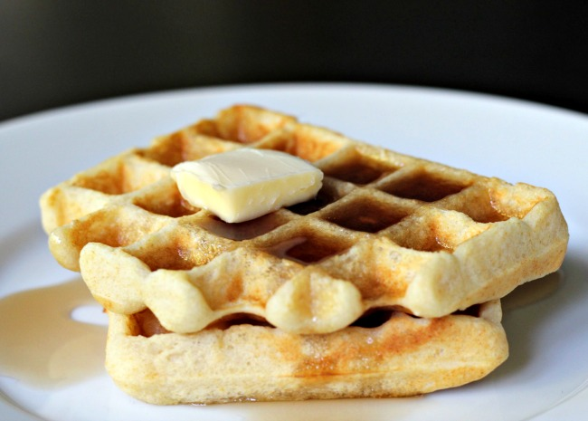

Waffles

You can keep the batter covered in the fridge for up to a week
Just be sure to whisk well before using again. You may also use whole wheat flour for this recipe.
Ingredients
- 2 eggs
- 2 cups all-purpose flour
- 1¾ cups milk
- ½ cup vegetable oil
- 1 tablespoon white sugarv
- 4 teaspoons baking powder
- ¼ teaspoon salt¼ teaspoon salt
Steps
- Preheat waffle iron. Beat eggs in large bowl with hand beater until fluffy.
Beat in flour, milk, vegetable oil, sugar, baking powder, salt and vanilla, just until smooth.
-
Spray preheated waffle iron with non-stick cooking spray. Pour mix onto hot waffle iron. Cook until golden brown. Serve hot.
Return to main page